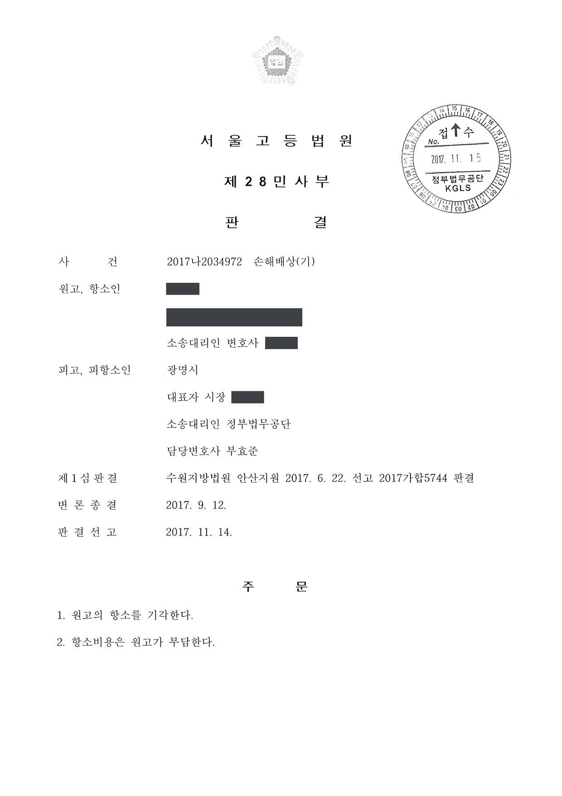
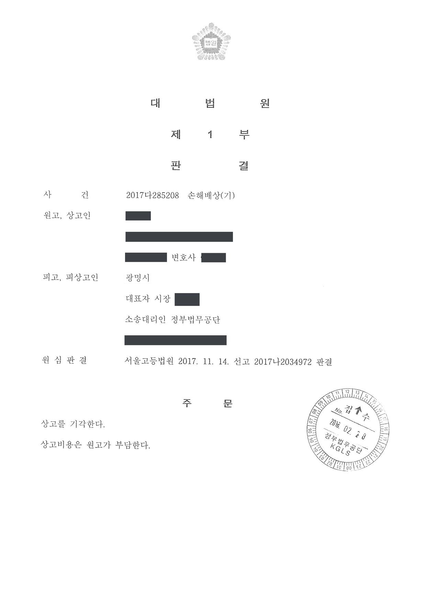

양돈장 행정지도 관련 지방자치단체 손해배상 청구소송 (1·2·3심)
수원지방법원 안산지원 2017가합5744 · 서울고등법원 2017나2034972 · 대법원 2017다285208 · 담당변호사 부효준
판결문



사건의 요지
양돈장 운영자가 지방자치단체의 축산폐수처리시설 설치 요구와 고발 등 행정지도가 위법하다며 2억 원의 손해배상을 구한 사건으로, 행정지도의 위법성과 손해의 인과관계가 다투어졌습니다. 확정 후 제기된 재심의 소도 각하되었습니다.
사건의 주요 내용
1978년부터 가족이 운영해 온 양돈장의 운영자인 원고는, 관할 지방자치단체가 1999년과 2001년 축산폐수처리시설을 갖추어 신고하지 않으면 폐쇄 등 행정처분을 하겠다는 공문을 보내고 세 차례 형사고발을 하여 약식명령을 받게 함으로써 어쩔 수 없이 돈사 2동을 톱밥돈사로 바꾸게 되었다고 주장하였습니다. 2005년 고발 사건의 항소심(2006년 11월)에서 '원고는 구 오수·분뇨 및 축산폐수의 처리에 관한 법률상 신고대상자가 아니다'라는 이유로 처리시설 미설치 부분에 무죄가 선고된 것이 그 근거였습니다.
원고는 2015년 4월 지방자치단체를 상대로 소를 제기하여, 톱밥돈사 변경으로 2010년 5월부터 2016년 7월까지 75개월 동안 입은 영업손실 200,482,900원의 배상을 청구하였습니다. 부효준 변호사는 1·2·3심에서 피고인 지방자치단체를 대리하였습니다.
쟁점
- 지방자치단체장과 담당 공무원이 축산폐수처리시설 설치를 요구한 행위가 강제력 있는 처분인지, 비구속적 행정지도인지
- 뒤에 형사재판에서 신고대상자가 아니라고 판단되었더라도 당시 공무원에게 객관적 주의의무 위반으로 인한 고의·과실이 있다고 볼 수 있는지
- 국가배상청구권의 단기소멸시효(손해 및 가해자를 안 날부터 3년)와 장기소멸시효(5년)의 기산점이 언제인지
원고의 주장
- 원고는 구 법률상 축산폐수배출시설 신고대상자가 아니어서 축산폐수처리시설을 설치하고 톱밥돈사로 변경할 의무가 없는데도, 지방자치단체가 이를 강요하고 분뇨업체가 정화조 분뇨를 수거하지 못하도록 압박하였으며 세 차례 형사고발로 약식명령을 받게 하여 결국 톱밥돈사로 변경하게 만들었다고 주장하였습니다.
- 이러한 고의 또는 과실에 의한 위법행위로 톱밥돈사 설치에 따른 비용 지출과 영업손실이 계속되고 있으므로, 소 제기 전 5년부터의 75개월분 영업이익 상당 손해의 3분의 2인 200,482,900원을 배상하라고 청구하였습니다.
부효준 변호사의 주장
- 양돈장의 실제 운영 주체가 원고가 아니라는 점을 다투는 한편, 지방자치단체장과 담당 공무원이 축산폐수처리시설 설치를 요구한 것은 소관 사무 범위 안에서 지도·권고·조언을 하는 비구속적 행정지도로서 강제력이 없고, 인근 주민의 악취 민원에 따라 현장조사와 협조 요청을 한 것이어서 위법하지 않으며, 관련 법규의 해석에 잘못이 있었더라도 객관적 주의의무를 위반하여 객관적 정당성을 상실한 정도에 이르지 않아 고의·과실이 없다고 주장하였습니다.
- 원고가 첫 약식명령 전인 2001년 11월 스스로 톱밥돈사로 변경 신고한 점, 2005년 고발 혐의 중 폐수 유출 부분은 유죄가 확정된 점을 들어 고발·압박으로 변경을 강요당하였다는 주장은 설득력이 없다고 반박하였습니다.
- 항소심에서는 원고가 늦어도 2006년 11월 무죄판결을 받은 무렵 손해와 가해자를 알았고, 피고의 마지막 고발 시점인 2005년 6월에는 손해가 현실적으로 발생하였으므로, 2015년 4월에 제기된 소는 국가배상법·민법상 단기(3년)·장기(5년) 소멸시효가 모두 완성된 뒤의 것이라고 항변하였습니다.
법원의 판단
1심 법원은 원고가 배우자 등과 함께 양돈장을 운영하는 민법상 조합관계에서 소송수행권을 부여받았으므로 자기 이름으로 소송을 할 수 있다고 보았으나, 지방자치단체장과 담당 공무원이 축산폐수처리시설 설치를 요구한 것은 비구속적 행정지도에 해당하여 강제력이 없고, 설령 원고가 신고대상자가 아니어서 처리시설 미설치가 법에 저촉되지 않는다 하더라도 담당 공무원이 객관적 주의의무를 위반하여 객관적 정당성을 상실하였다고 볼 증거가 없어 고의·과실을 인정할 수 없다는 이유로 청구를 받아들이지 않았습니다.
항소심은 피고의 소멸시효 항변을 먼저 판단하여, 원고는 늦어도 2006년 11월 일부 무죄판결이 선고되어 확정된 무렵 피고의 신고 요청과 고발이 잘못되었다는 사실과 톱밥돈사 설치로 인한 손해를 현실적·구체적으로 인식할 수 있었으므로 2015년 4월 제기된 소는 '손해 및 가해자를 안 날'로부터 3년의 단기소멸시효가 완성된 뒤의 것이고, 피고의 마지막 고발 시점인 2005년 6월경 손해가 현실적으로 발생하였으므로 지방재정법상 5년의 장기소멸시효도 완성되었다고 판단하여 항소를 받아들이지 않았습니다.
대법원은 2018년 2월 심리불속행으로 상고심을 마무리하여 판결이 확정되었고, 그 뒤 원고가 제기한 재심의 소도 각하되었습니다.
지방자치단체장이나 축산폐수 담당 공무원이 원고에게 축산폐수처리시설을 설치하라고 지침을 내린 것은 그 소관 사무의 범위 안에서 일정한 행정목적을 실현하기 위하여 일정한 행위를 하거나 하지 않도록 지도, 권고, 조언 등을 하는 행정작용인 비구속적 행정지도에 해당하여 강제력이 있다고 보기 어렵다. 설령 이러한 지침이 행정처분이고 원고가 구 법률에 따른 축산폐수배출시설 신고대상자가 아니어서 축산폐수처리시설을 설치하지 아니하고 축산폐수배출시설을 사용한 행위가 구 법률에 저촉되지 아니한다 하더라도 담당 공무원이 객관적 주의의무를 위반함으로써 이와 같은 지침이 객관적 정당성을 상실하였다고 인정할 만한 증거가 없는 이상 담당 공무원의 고의 또는 과실이 있었다고 보기도 어렵다.
수원지방법원 안산지원 2017가합5744 판결 이유 '3. 나. 피고의 위법행위 여부에 관하여'
이러한 사실관계에 의하면, 원고는 늦어도 수원지방법원에서 2006. 11. 2. 무죄판결을 선고받고 그 부분에 대하여 검사가 상고하지 않아 확정된 것으로 보이는 그 무렵에는 피고의 원고에 대한 신고대상 축산폐수배출시설설치신고 요청 고지 및 구 법률 위반으로 인한 고발이 잘못되었다는 사실을 알았다고 할 것이고, 또한 원고는 피고의 이러한 행위에 따라 이 사건 양돈장 제1, 2동을 톱밥돈사로 변경하였고, 그로 인해 톱밥돈사 설치로 인한 비용지출 등의 손해를 입었다는 사실을 현실적이고도 구체적으로 인식할 수 있었다고 보는 것이 타당하다. 그렇다면, 원고가 2015. 4. 30. 제기한 이 사건 소는 원고가 손해 및 가해자를 안 날로부터 3년이 경과된 후 제기된 것이므로, 원고의 피고에 대한 손해배상청구권은 단기소멸시효가 완성되었다고 보아야 한다.
서울고등법원 2017나2034972 판결 이유 '2. 나. 1) 단기소멸시효 완성 여부'
그런데 앞서 본 바와 같이 원고는 피고의 신고대상 축산폐수배출시설설치신고 요청 고지 및 구 법률 위반으로 인한 고발 등에 따라 이 사건 양돈장 제1, 2동을 톱밥돈사로 변경하고 2003. 11. 21. 축산폐수배출시설설치신고에 대한 준공검사필증을 교부받았는바, 적어도 원고가 불법행위라고 주장하는 피고의 마지막 고발 시점인 2005. 6. 23.경에는 피고의 가해행위로 인한 손해가 현실적인 것으로 되어 발생하였다고 보아야 할 것이므로, 원고의 손해배상청구권의 소멸시효는 그때부터 진행된다고 보는 것이 타당하다. 그렇다면, 원고가 2015. 4. 30. 제기한 이 사건 소는 피고가 불법행위를 한 날로부터 5년이 경과된 후 제기된 것이므로, 원고의 피고에 대한 손해배상청구권은 장기소멸시효가 완성되었다고 보아야 한다.
서울고등법원 2017나2034972 판결 이유 '2. 나. 2) 장기소멸시효 완성 여부'
※ 판결 이유 가운데 이 사건의 판단 기준이 된 부분을 그대로 옮긴 것으로, 당사자 이름 등은 가렸습니다.
이 사건이 보여 주는 것
행정청의 시설 설치 요구나 고발이 뒤에 법 해석의 잘못으로 드러났다 하더라도, 그것이 곧바로 국가배상책임으로 이어지지는 않습니다. 비구속적 행정지도는 강제력이 없고, 처분이라 하더라도 담당 공무원이 객관적 주의의무를 위반하여 객관적 정당성을 상실한 정도에 이르러야 위법·과실이 인정됩니다.
또한 국가배상청구권은 손해와 가해자를 안 날부터 3년, 불법행위가 있은 날부터 5년(지방자치단체에 대한 금전채권은 지방재정법)의 소멸시효에 걸립니다. 관련 형사사건에서 무죄판결을 받은 때처럼 행정청의 조치가 잘못되었음을 알게 된 시점이 기산점이 되므로, 배상을 구하려면 그때부터 3년 안에 소를 제기해야 하고, 지방자치단체로서는 시효 항변을 빠뜨리지 않는 것이 중요합니다.
비슷한 처분을 받으셨다면
행정처분은 처분이 있음을 안 날부터 90일 이내에 행정심판이나 취소소송으로 다투어야 하고, 기간이 지나면 돌이킬 수 없는 처분은 집행정지를 서둘러야 합니다. 처분서를 받은 날짜부터 확인해 드립니다.